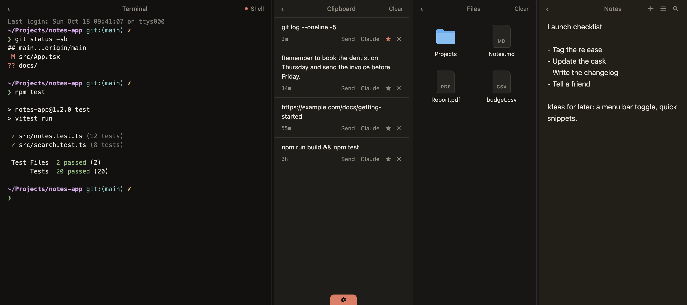

Press
Press kit
One line: Pullshelf is a free, open-source pull-down shelf for the Mac with a terminal, clipboard history, files and notes.
Facts: macOS 13+, Apple Silicon, MIT license, no telemetry, v0.1.1. Contact: open an issue on GitHub.
Screenshots
Dark · Light · Demo video


